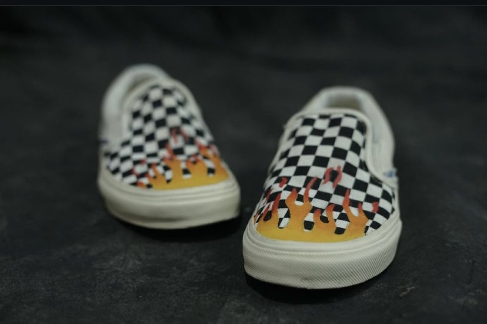
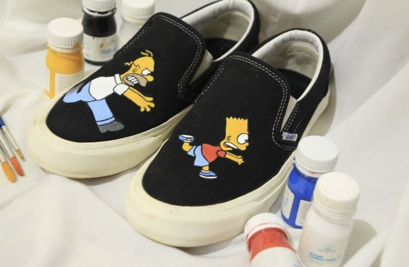
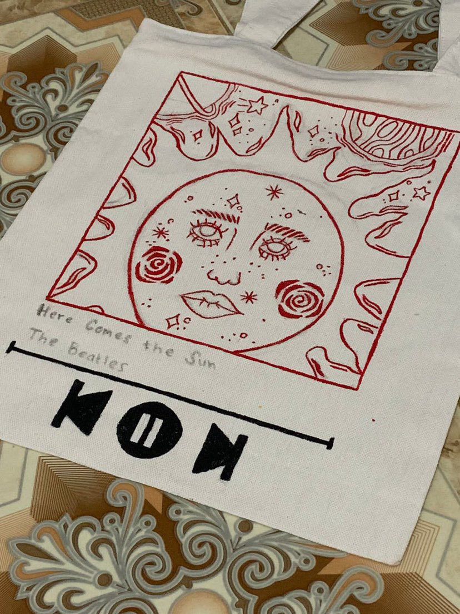
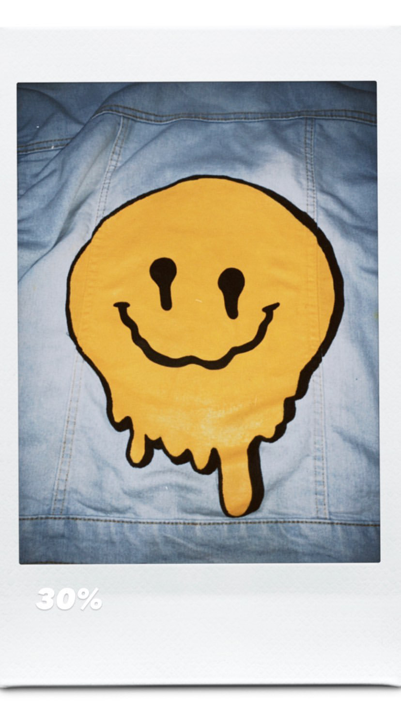
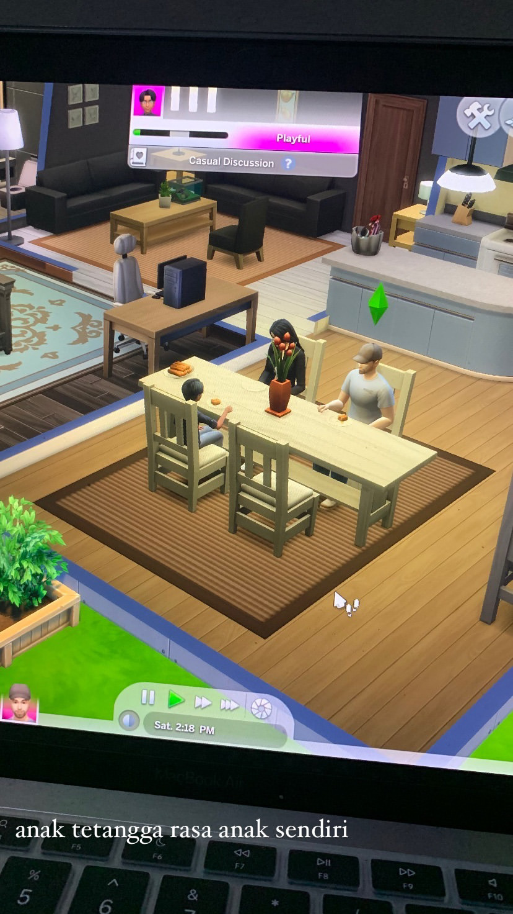
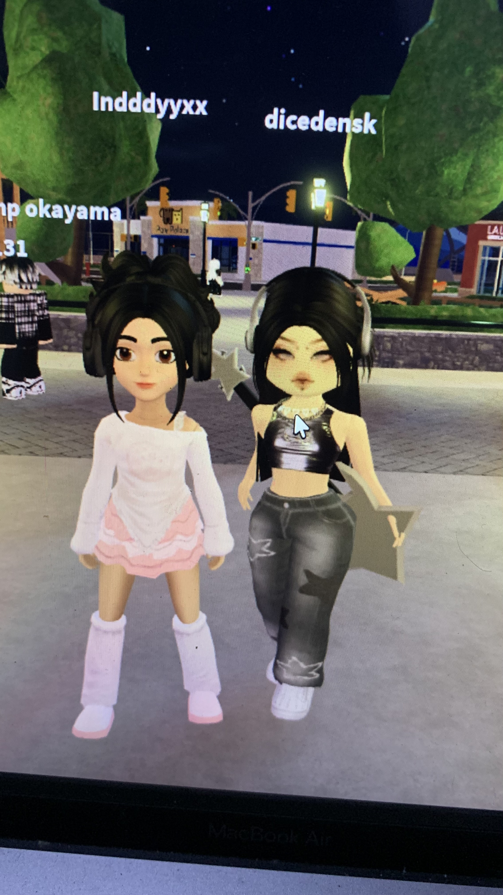
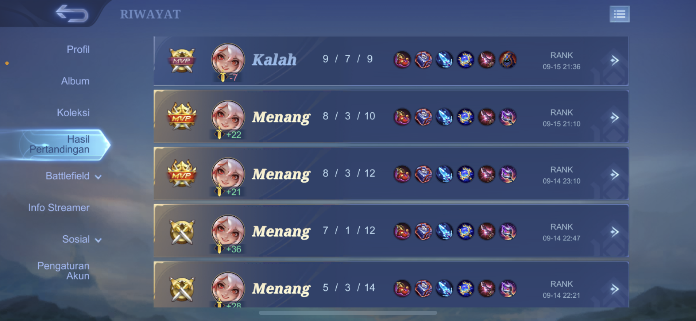

dengerin ya lagunya biar baca blognya lebih seru!!
play here!! 👇🏻
Kalian pasti berpikir, "Ah, mahasiswa IT pasti hidupnya cuma ngoding mulu." Eits, jangan salah! Selain berkutat dengan dunia coding yang penuh logika, aku juga punya dua hobi yang mungkin terdengar agak kontras: bermain game dan melukis.
Coding, Gaming, and Art: Sebuah Perpaduan Unik Banyak yang bertanya, "Kok bisa, sih, suka hal-hal yang sangat berbeda itu?" Menurutku, justru di situlah serunya. Dunia coding mengajarkanku tentang logika, algoritma, dan pemecahan masalah. Saat bermain game, aku bisa melatih refleks, strategi, dan kreativitas. Sedangkan melukis, membantuku mengeksplorasi sisi artistik yang mungkin jarang tersentuh dalam keseharian sebagai mahasiswa IT.
Bagaimana ketiga hal ini bisa bersinergi dalam hidupku? Kreativitas dalam Coding: Saat membuat sebuah program, aku sering kali dihadapkan pada tantangan untuk menemukan solusi yang paling efisien dan elegan. Sama seperti melukis, coding juga membutuhkan kreativitas untuk merangkai kode-kode menjadi sebuah karya yang fungsional. Logika dalam Gaming: Banyak game yang mengharuskan kita berpikir secara logis untuk menyelesaikan misi atau teka-teki. Keterampilan ini sangat berguna dalam memecahkan masalah dalam coding. Detail dalam Melukis: Melukis mengajarkan aku untuk memperhatikan detail-detail kecil. Keterampilan ini juga sangat penting dalam dunia programming, di mana kesalahan sekecil apapun bisa menyebabkan program tidak berjalan dengan baik.
ketika aku masih sekolah di sma aku punya small business atau project kecil-kecilan yaitu jasa repaint dan custome dibeberapa jenis media seperti sepatu, tas, dan jeans jacket
  
beberapa game yang aku mainkan adalah roblox, the sims 4, mobile legend, iya tau CBL, cuma bisa lylia 😔
 
Back!